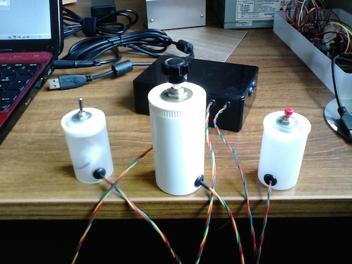
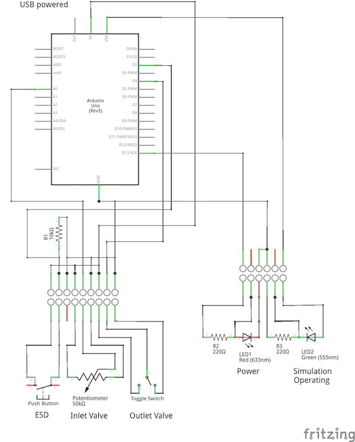
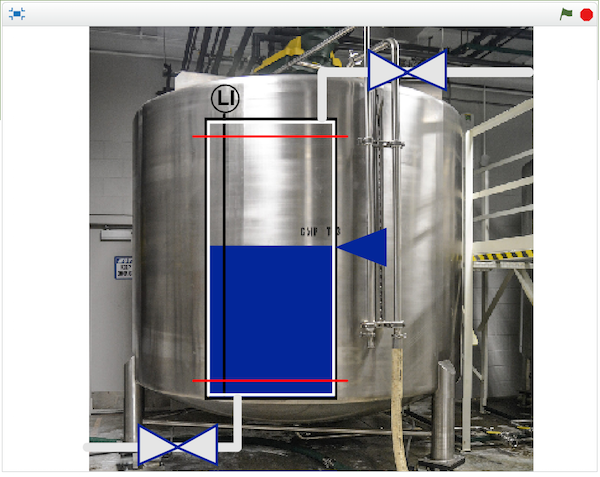

In June 2014 I was invited, as a STEM Ambassador, to help at an event at Dorothy Springer School in Brighton. A number of us were asked to give 15 minute 'interactive' talks to groups of ten-year-olds about some science or engineering aspect of our careers. I have been invited again in 2015. Whereas last year I got the students to draw control lines on a simple P&ID, this year I thought that I should try to make it more interactive in the form of a simulation.
The idea is for some of the students to be the actuators (with a physical interface) and for the rest to be the 'control computer', telling the actuators what to do. The object is to keep the level in the tank at the set point while one of the students acts as the 'process', making random demands on the tank for water by opening the outlet valve using a toggle switch. The inlet valve 'actuator' has a potentiometer and the ESD trip has a push button.
The switch, potentiometer and push button are wired into an Arduino UNO running the Firmata sketch and connected via the USB port to the laptop. On the laptop, the scratch-to-arduino software is running and a tank simulation is built in Scratch 2.
The circuitry drives a red LED to show that there is power and the Scratch program flashes a green LED to show that it is communicating. The Arduino, screw connectors and other components are mounted in a black plastic box.
The circuit diagram is shown below, as is the Scratch application. The water level moves up and down as the valves are opened and closed. They fill with blue when they are open. If the level goes above the top red line or below the lower red line then the level indicator turns red. At this point the 'ESD trip' should be told to shutdown and thus press the push button. This results in a a big, yellow star on the screen and a a symbol clash (I could not find an explosion sound). It can all be reset by pressing the 'r' key.
 © David James 2015 Last updated: 23 May 2015